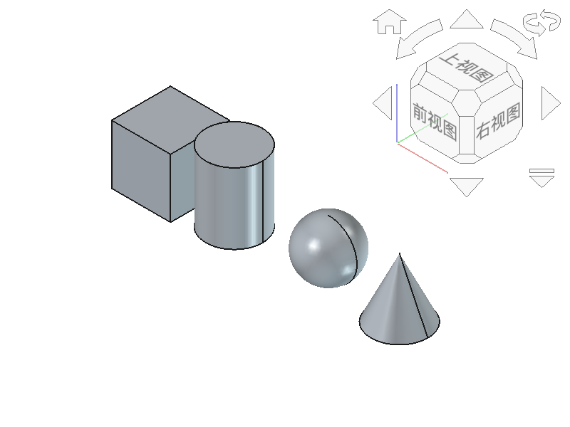

FreeCAD是开源免费的参数化3D建模软件，本课程全部使用FreeCAD。
界面主要组成部分：
🔹 菜单栏（顶部）：文件、编辑、视图等
🔹 工作台选择器（顶部下拉）：切换不同功能模块
🔹 树视图（左侧）：显示模型对象层级
🔹 3D视图（中间）：模型显示区域
🔹 Python控制台（底部）：输入代码执行（本课程核心！）
🔹 属性面板（左侧下部）：修改对象参数
鼠标操作：
🖱️ 左键拖动：旋转视图
🖱️ 右键拖动：平移视图
🖱️ 滚轮滚动：缩放视图
🖱️ 滚轮点击：以鼠标位置为中心旋转
视图快捷键：
⌨️ 数字键 0：正视图
⌨️ 数字键 1：等角视图（轴测图）
⌨️ V：切换正交/透视投影
⌨️ Ctrl+Shift+S：截图
FreeCAD通过"工作台"（Workbench）组织功能，不同工作台提供不同工具。
本课程使用的工作台：
🔹 Part工作台：基础几何体创建（模块一/三/四重点使用）
🔹 Sketcher工作台：草图绘制（模块二使用）
🔹 PartDesign工作台：特征建模（模块二使用）
🔹 Mesh工作台：STL导出（模块五使用）
# 切换到Part工作台后，在Python控制台输入：
import Part
# 创建一个立方体（长25 宽25 高25）
box = Part.makeBox(25, 25, 25)
# 显示在3D视图中
Part.show(box)
print("立方体已显示！")
import Part：导入基础几何模块。box = Part.makeBox(25, 25, 25)：创建25×25×25mm立方体，并把它保存到变量box。Part.show(box)：把内存中的几何体加入当前FreeCAD文档，使它出现在对象树和3D视图中。print(...)：在Python控制台给出执行完成提示，不会改变模型。makeBox()而漏掉Part.show()，几何体已创建但看不见；若控制台报NameError，先确认已执行import Part。这段代码将在模块三详细学习，本课先跟着老师完成“导入—创建—显示—确认”四步体验。
老师将演示创建以下基础几何体：

立方体、圆柱、球体、圆锥、组合
这些几何体是3D打印的基础——所有复杂模型都是由这些基础形状组合而成的。
🔴 禁止事项：
❌ 打印机运行时触摸喷嘴（温度200℃以上，会烫伤！）
❌ 打印过程中打开打印机门或移动平台
❌ 用手直接取刚打印完的模型（高温，须等冷却）
❌ 向打印机内投入任何异物
🟢 必须事项：
✅ 取件前等待平台冷却至室温
✅ 发现异常（异味、异响、冒烟）立即断电并报告老师
✅ 保持打印区域整洁，及时清理支撑残留
✅ 使用铲刀取件，不用手硬掰
1. 在FreeCAD中练习视图操作：旋转、平移、缩放，直到熟练
2. 切换到Part工作台，在Python控制台输入课上演示的代码，创建一个立方体
3. 在笔记本上写下3D打印安全规范的5条要点
4. 预习模块二第3课：了解"草图"概念，思考如何用FreeCAD画一个矩形